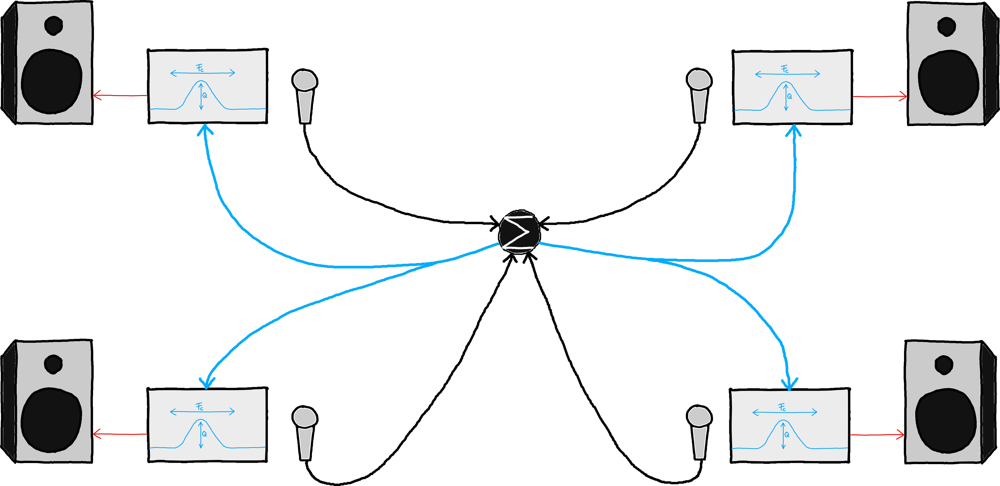

Filter Band
A distributed filter-bank configuration for spectral spatialization.
Sounds from each musician are sent to every other Access Point, where they are processed with a bandpass filter and sent to the AP's output to the audio system (local speaker or virtual sound source). The configuration works for an unlimited number of APs.
Example for a 4-AP setup:

System Configuration
Audio Routing
- fully connected network
- each AP sends raw audio to all other APs, eg.
- microphone
- synth
Processing
- Each AP runs a single bandpass filter.
Control
- Each musician can control the following parameters via touch screen:
- filter center frequency
- filter quality/bandwidth/resonance
- output gain
Launch & Kill
Launch piece via Ansible:
$ ansible-playbook -i hosts playbooks/launch_filterband.yml
Kill all components via Ansible:
$ ansible-playbook -i hosts playbooks/kill_filterband.yml
Note: There are nicer ways of doing this: - Run whole piece in single tmux session?
Performance
- musicians are assigned a role, changing over the course of a performance:
- sound source
- processor